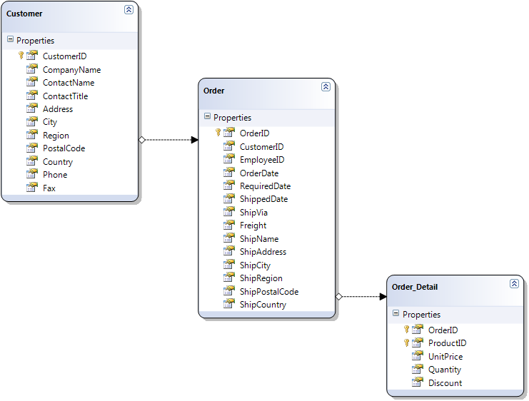
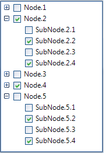

Binding to Object-relational Data
Binding RadTreeView to related data - custom objects
RadTreeView has the ability to bind to related data of custom objects which have member collections of related objects (ORM generated classes for example).
Consider the following class diagram: 
There are three classes named Customer, Order and
Order_Detail. The Customer class represents a custom.
The data relations in the case of custom objects are represented by properties which provide references
to collections of related objects. In this case the Customer class has a property
named Orders which is a collection of Order objects.
This is the first relation. The second relation is the Order_Details property
in the Order class, it offers a reference to a collection of
Order_Details. Once you have such class composition, it is trivial
for RadTreeView to represent it visually in your application.
The two steps that must be done are these:
- Set the DataSource of RadTreeView to a collection of your root objects (a collection of Customer object in this case):
[C#]
IEnumerable<Customer> customers = context.GetTable<Customer>().ToList();
this.radTreeView1.DataSource = customers;
[VB.NET]
Dim customers As IEnumerable(Of Customer) = context.GetTable(Of Customer)().ToList()
Me.RadTreeView1.DataSource = customers
'#End Region
'#region relationClasses
Me.RadTreeView1.DisplayMember = "ContactName\ShipName\UnitPrice"
Me.RadTreeView1.ChildMember = "Customers\Orders\Order_Details"
- Set DisplayMember corresponding to the DisplayMembers of the different types of objects and set the ChildMember corresponding to the names of the properties that represent the collections of sub objects.
[C#]
this.radTreeView1.DisplayMember = "ContactName\\ShipName\\UnitPrice";
this.radTreeView1.ChildMember = "Customers\\Orders\\Order_Details";
[VB.NET]
Me.RadTreeView1.DisplayMember = "ContactName\ShipName\UnitPrice"
Me.RadTreeView1.ChildMember = "Customers\Orders\Order_Details"
As a result, we get the following hierarchy in RadTreeView:

Binding check boxes
Since Q3 2014 RadTreeView supports binding the check-boxes of the nodes to a field in the data. You just need to specify
the RadTreeView.CheckedMember property in addition to the necessary information described above.
Consider the following diagram which can be illustrated with the sample classes below: 
Note that the IsActive and the Status properties represent boolean data.
[C#]
public class Parent
{
public string ParentId { get; set; }
public string Title { get; set; }
public bool IsActive { get; set; }
public List<Child> Children { get; set; }
public Parent(string parentId, string title, bool isActive, List<Child> children)
{
this.ParentId = parentId;
this.Title = title;
this.IsActive = isActive;
this.Children = children;
}
}
public class Child
{
public string ChildId { get; set; }
public string ParentId { get; set; }
public string Name { get; set; }
public bool Status { get; set; }
public Child(string childId, string parentId, string name, bool status)
{
this.ChildId = childId;
this.ParentId = parentId;
this.Name = name;
this.Status = status;
}
}
[VB.NET]
Public Class Parent
Public Property ParentId() As String
Get
Return m_ParentId
End Get
Set(value As String)
m_ParentId = Value
End Set
End Property
Private m_ParentId As String
Public Property Title() As String
Get
Return m_Title
End Get
Set(value As String)
m_Title = Value
End Set
End Property
Private m_Title As String
Public Property IsActive() As Boolean
Get
Return m_IsActive
End Get
Set(value As Boolean)
m_IsActive = Value
End Set
End Property
Private m_IsActive As Boolean
Public Property Children() As List(Of Child)
Get
Return m_Children
End Get
Set(value As List(Of Child))
m_Children = Value
End Set
End Property
Private m_Children As List(Of Child)
Public Sub New(parentId As String, title As String, isActive As Boolean, children As List(Of Child))
Me.ParentId = parentId
Me.Title = title
Me.IsActive = isActive
Me.Children = children
End Sub
End Class
Public Class Child
Public Property ChildId() As String
Get
Return m_ChildId
End Get
Set(value As String)
m_ChildId = Value
End Set
End Property
Private m_ChildId As String
Public Property ParentId() As String
Get
Return m_ParentId
End Get
Set(value As String)
m_ParentId = Value
End Set
End Property
Private m_ParentId As String
Public Property Name() As String
Get
Return m_Name
End Get
Set(value As String)
m_Name = Value
End Set
End Property
Private m_Name As String
Public Property Status() As Boolean
Get
Return m_Status
End Get
Set(value As Boolean)
m_Status = Value
End Set
End Property
Private m_Status As Boolean
Public Sub New(childId As String, parentId As String, name As String, status As Boolean)
Me.ChildId = childId
Me.ParentId = parentId
Me.Name = name
Me.Status = status
End Sub
End Class
#End Region
Private Sub ObjectRelationalData(radTreeView1 As RadTreeView)
'#Region "CheckedMember"
Dim dataItems As New List(Of Parent)()
Dim currentParent As Parent
Dim currentChild As Child
Dim children As List(Of Child)
Dim parentId As String = String.Empty
Dim childId As String = String.Empty
For i As Integer = 1 To 5
parentId = Guid.NewGuid().ToString()
children = New List(Of Child)()
For j As Integer = 1 To 4
childId = Guid.NewGuid().ToString()
currentChild = New Child(childId, parentId, "SubNode." & i & "." & j, j Mod 2 = 0)
children.Add(currentChild)
Next
currentParent = New Parent(parentId, "Node." & i, i Mod 2 = 0, children)
dataItems.Add(currentParent)
Next
radTreeView1.DataSource = dataItems
radTreeView1.DisplayMember = "Title\Name"
radTreeView1.ChildMember = "Parent\Children"
radTreeView1.CheckedMember = "IsActive\Status"
radTreeView1.CheckBoxes = True
'#End Region
End Sub
End Class
The code snippet below illustrates how to bind the check-boxes coming from the described properties:
[C#]
List<Parent> dataItems = new List<Parent>();
Parent currentParent;
Child currentChild;
List<Child> children;
string parentId = string.Empty;
string childId = string.Empty;
for (int i = 1; i <= 5; i++)
{
parentId = Guid.NewGuid().ToString();
children = new List<Child>();
for (int j = 1; j < 5; j++)
{
childId = Guid.NewGuid().ToString();
currentChild = new Child(childId, parentId, "SubNode." + i + "." + j, j % 2 == 0);
children.Add(currentChild);
}
currentParent = new Parent(parentId, "Node." + i, i % 2 == 0,children);
dataItems.Add(currentParent);
}
radTreeView1.DataSource = dataItems;
radTreeView1.DisplayMember = "Title\\Name";
radTreeView1.ChildMember = "Parent\\Children";
radTreeView1.CheckedMember = "IsActive\\Status";
radTreeView1.CheckBoxes = true;
[VB.NET]
Dim dataItems As New List(Of Parent)()
Dim currentParent As Parent
Dim currentChild As Child
Dim children As List(Of Child)
Dim parentId As String = String.Empty
Dim childId As String = String.Empty
For i As Integer = 1 To 5
parentId = Guid.NewGuid().ToString()
children = New List(Of Child)()
For j As Integer = 1 To 4
childId = Guid.NewGuid().ToString()
currentChild = New Child(childId, parentId, "SubNode." & i & "." & j, j Mod 2 = 0)
children.Add(currentChild)
Next
currentParent = New Parent(parentId, "Node." & i, i Mod 2 = 0, children)
dataItems.Add(currentParent)
Next
radTreeView1.DataSource = dataItems
radTreeView1.DisplayMember = "Title\Name"
radTreeView1.ChildMember = "Parent\Children"
radTreeView1.CheckedMember = "IsActive\Status"
radTreeView1.CheckBoxes = True
'#End Region
End Sub
End Class